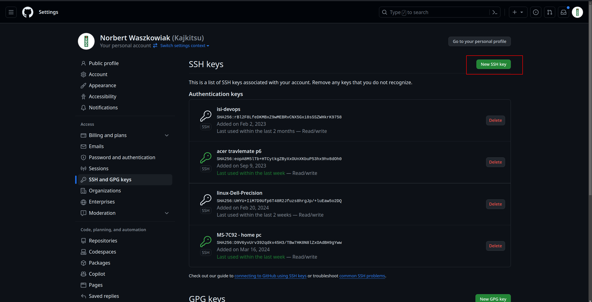
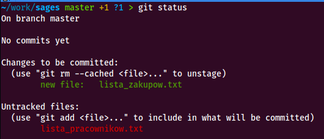
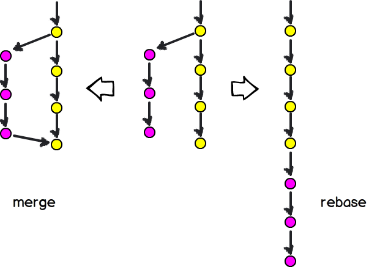
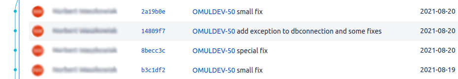
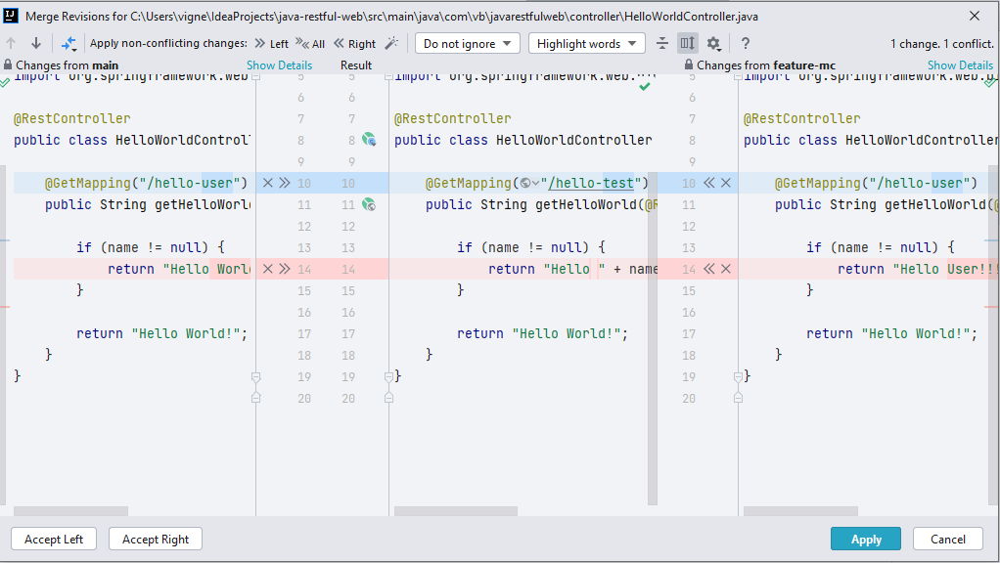
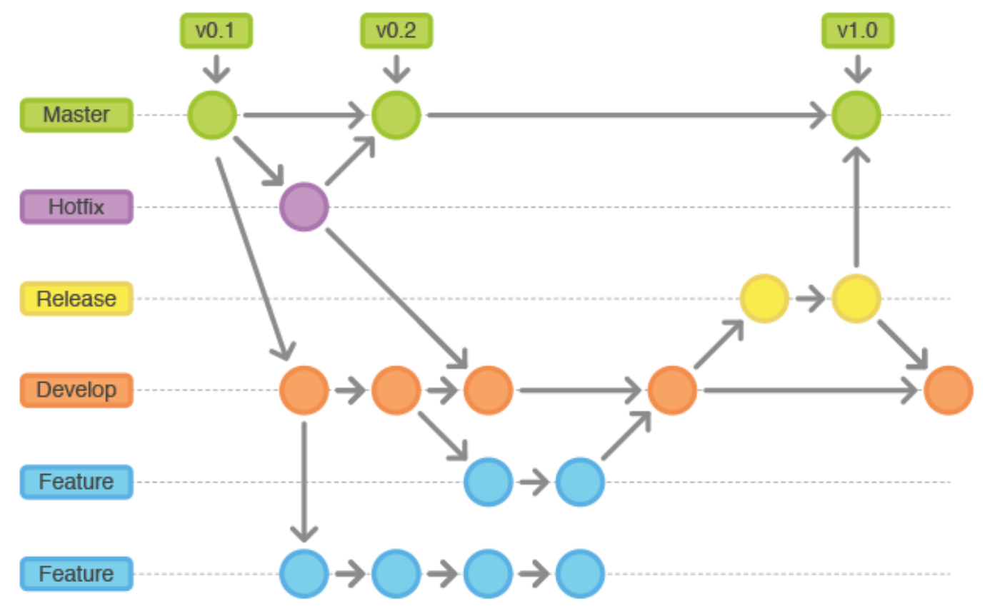

Git
Czyli jak nie narobić 💩 w repozytorium
Rozproszony system kontroli wersji
- śledzenie wszystkich zmian dokonywanych w plikach
- możliwość przywrócenia poprzedniej wersji pliku
- współdzielenie plików z innymi
- łączenie zmian dokonywanych w plikach przez wiele osób w różnym czasie
- obsługa dużych projektów
Podstawy
Git przechowuje dane jako zestaw migawek (snapshot).

Za każdym razem gdy wprowadzamy zmianę do projektu, Git tworzy obraz przedstawiający to jak wyglądają pliki w danym momencie.
Niemal każda operacja jest lokalna
Większość operacji jakie przeprowadzamy wymaga jedynie dostępu do lokalnych plików i zasobów.
Git wyłącznie dodaje nowe dane
Wykonując pracę niemal zawsze jedynie dodajemy dane do bazy danych Git.
Pozwala to na eksperymentowanie bez ryzyka - zawsze możemy wrócić do poprzedniej wersji projektu.
Stany

- zmodyfikowany
- śledzony
- zatwierdzony
Instalacja
Standardowy sposób instalacji w systemie Linux opartym na Debianie (np. Ubuntu).
$ sudo apt-get install gitUstawienia tożsamości
$ git config --global user.name "John Doe"
$ git config --global user.email johndoe@example.com
Aliasy
Nie ma potrzeby pamiętania długich, skomplikowanych komend. Można skorzystać z aliasów:
$ git config --global alias.co checkout
$ git config --global alias.br branch
$ git config --global alias.ci commit
$ git config --global alias.st status
Podgląd ustawień
$ git config --list
alias.co=checkout
alias.br=branch
alias.ci=commit
alias.st=status
alias.unstage=reset HEAD --
alias.last=log -1 HEAD
user.email=norbert.waszkowiak@wat.edu.pl
user.name=Norbert Waszkowiak
Uwierzytelnianie
Warto wymienić się kluczem ssh z serwisem hostingowym, na którym znajdują się repozytoria.
git init
Tworzymy nowe repozytorium gita
git clone
Klonujemy istniejące repozytorium
git add
Dodajemy pliki do "poczekalni"
git commit
Zatwierdzamy zmiany (tworzymy commita)
$ git commit -m "<treść commita>"git status
Sprawdzamy status repozytorium
git log
Sprawdzamy historię zmian
~/work/sages master > git log
commit 3f2330dcbe4219835ab81b35f93a86710205b520 (HEAD -> master)
Author: Norbert Waszkowiak <norbert.waszkowiak@wat.edu.pl>
Date: Wed Jun 22 15:29:06 2022 +0200
Initial commit
git diff
Porównujemy zmiany
~/work/sages master !1 > git diff
diff --git a/hasla.txt b/hasla.txt
index 77a7723..d00821a 100644
--- a/hasla.txt
+++ b/hasla.txt
@@ -1 +1 @@
-mkaminski;m4ttek123
+mstone;m4ttek123
git revert
Wycofujemy zmiany
~/work/sages master > git revert 47f8cfc6f7592320365bcc55d0a5b50f2a844773
[master 20a9cda] Revert "Random commit"
1 file changed, 1 deletion(-)
delete mode 100644 hasla.txt
git reset
Resetujemy zmiany
~/work/sages master > git reset 47f8cfc6f7592320365bcc55d0a5b50f2a844773
Unstaged changes after reset:
D hasla.txt
git restore
Przywracanie zmian
~/work/sages master !1 > git status
On branch master
Changes not staged for commit:
(use "git add ..." to update what will be committed)
(use "git restore ..." to discard changes in working directory)
modified: lista_pracownikow.txt
no changes added to commit (use "git add" and/or "git commit -a")
~/work/sages master !1 > git restore lista_pracownikow.txt
~/work/sages master > git status
On branch master
nothing to commit, working tree clean
git commit --amend
Modyfikujemy commita
$ git commit --amend
git rebase
Przemieszczamy commity
$ git rebase <nazwa brancha>
git branch
Zarządzamy branchami
$ git branch
git checkout
Przełączamy się między branchami
$ git checkout <nazwa brancha>
git merge
Scalamy branche
$ git merge <nazwa brancha>
git remote
Zarządzamy repozytoriami zdalnymi
$ git remote
git pull
Pobieramy zmiany z repozytorium zdalnego
$ git pull
git push
Przesyłamy zmiany do repozytorium zdalnego
$ git push
Tagi
Specjalne oznaczenie poszczególnych punktów w historii repozytorium, które są szczególnie ważne.
Zazwyczaj wykorzystywane do oznaczania wydawanych wersji. Rozróżniamy dwa typy tagów:
- lightweight
- annotated
$ git tag -a v1.4 -m "my version 1.4"
HEAD
Wskazanie na miejsce w repozytorium (branch/commit) na którym się "znajdujemy"
~/work/sages master *1 > cat .git/HEAD
ref: refs/heads/master
Merge vs. rebase
git merge
Zalety
- Łatwe do zrozumienia i proste do wykonania.
- Utrzymuje historię commitów w czytelnej formie.
- Pozwala na łatwe śledzenie zmian w różnych gałęziach.
git merge
Wady
- Tworzy dodatkowy commit scalania, który może zaśmiecać historię commitów.
- Może prowadzić do konfliktów scalania, które należy ręcznie rozwiązać.
git rebase
Zalety
- Przenosi zmiany z jednej gałęzi na drugą
- Historia jest bardziej liniowa, chronologicznie
- Pozwala na uniknięcie konfliktów scalania.
git rebase
Wady
- Może być trudniejsze do zrozumienia i wykonania niż merge.
- Może prowadzić do utraty informacji o historii commitów.
- Należy używać go ostrożnie w przypadku gałęzi, które zostały udostępnione innym osobom.
Commitowanie
Rozsądny podział.
Commitujemy często.
Nie commitujemy "w połowie".
Używamy gałęzi.
Nazwy commitów są ważne.
Na przykład:
- "Dodano funkcję X"
- "Naprawiono błąd Y"
- "Zaktualizowano bibliotekę Z"
Rozwiązywanie konfliktów
Github Desktop
Instalacja na Ubuntu
Github Desktop
Instalacja na Windows
Wykonywanie operacji znanych z terminala:
- Klonowanie repozytorium
git clone - Dodawanie plików do "poczekalni"
git add - Zatwierdzanie zmian
git commit - Sprawdzanie statusu repozytorium
git status
Wykonywanie operacji znanych z terminala:
- Sprawdzanie statusu repozytorium
git status - Przeglądanie historii zmian
git log - Porównywanie zmian
git diff - Przywracanie zmian
git restore
Wykonywanie operacji znanych z terminala:
- Przemieszczanie commitów
git rebase - Scalanie gałęzi
git merge - Pobieranie zmian z repozytorium zdalnego
git pull - Wysyłanie zmian do repozytorium zdalnego
git push
Git flow
- master: Zawiera stabilny kod, gotowy do wydania.
- develop: Służy do rozwijania nowych funkcji i testowania ich przed wydaniem.
- feature: Używane do tworzenia i testowania nowych funkcji.
- release: Służy do przygotowania wersji do wydania.
- hotfix: Używane do naprawiania błędów w wydanych wersjach.
Podsumowanie
Najważniejsze cechy Gita
Kontrola wersji
- Śledzenie zmian w plikach i kodzie.
- Możliwość przywracania poprzednich wersji.
- Przeglądanie historii zmian.
Współpraca
- Wspólna praca nad projektami.
- Łączenie zmian z różnych gałęzi.
- Możliwość komentowania i recenzowania kodu.
Efektywność
- Ułatwione zarządzanie projektami.
- Możliwość tworzenia i scalania gałęzi.
- Automatyzacja powtarzalnych zadań.
Dostępność
- Darmowy i otwarty kod źródłowy.
- Dostępny na różnych platformach.
- Duża społeczność użytkowników i programistów.
Dodatkowe materiały
git-scm.com Recording Changes to the Repository